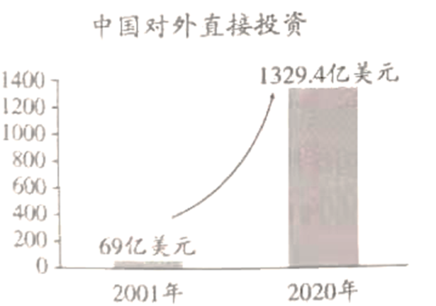
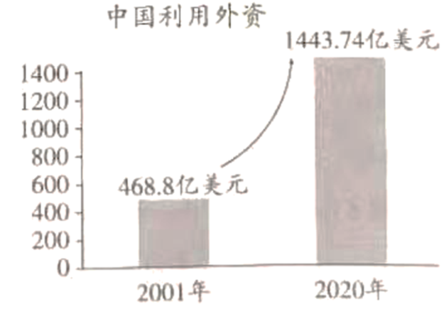

2021年北京市中考政治试题 · 选择题 第11、12、13、14、15题
11. 小明登录北京市人民代表大会常务委员会官网，查阅到部分人大代表的建议。
首页>重要发布>重点工作>代表工作>建议公开>建议列表 第十五届第三次√ |
序号 | 建议标题 |
1 | 关于打通G7高速公路的建议 |
2 | 关于加快出台地方金融监管条例开展“蜜蜂行动”风险教育活动的建议 |
3 | 关于加快出台我市自然保护地实施意见的建议 |
4 | 关于吸引民企高管加入党组织增强高科技人才双向流动的建议 |
据此推断正确的是（ ）
A. 人大代表来自人民，依法行使国家权力
B 人大代表深入调查研究，认真履职，对人民负责
人大代表深入调查研究，认真履职，对人民负责
C. 人大代表行使立法权，根据市民意愿制定相关法规
D. 人大代表拥有质询权，可以责令政府部门落实建议
12. 北京的前门楼子不仅可以逛，现在还能“吃”。很多游客举者“前门楼子”冰棍与前门楼子来一张大小同框的合影，这已成为前门大街上的一景。游客表示冰棍虽然有点贵，但造型独特，“咱吃的不是冰棍，是文化。”对此，认识正确的是（ ）
A. 价格高造型巧，更能满足人们对美好生活的需要
B. 文化创意产品是对传统文化的创新性发展
C. 非物质文化遗产在现实生活中具有经济价值
D. 生活处处可创新，创新让生活更加丰富多彩
13.
在《中华人民共和国未成年人保护法（修订草案）》向社会征求意见时，我们通过调研，以自己的视角和方式提出修改意见，其中有一条修改意见被采纳，还收到了全国人大常委会法制工作委员会的感谢信，我们既兴奋又自豪。 |
以上是某校中学生在课堂上的一段分享，从中可以看出（ ）
①公民有序参与立法，旨在提升其法律专业素养
②公民积极行使监督权，体验感悟社会主义民主法治
③人大畅通民意反映渠道，让法律更好体现人民意志
④开门立法凝聚社会共识，增强公民对法治的信仰
A. ①②B. ①③C. ②④D. ③④
14. 2021年6月1日起实施 《中华人民共和国乡村振兴促进法》规定，每年农历秋分日为中国农民丰收节，乡镇人民政府应当指导和支持农村基层群众性自治组织规范化、制度化建设，国家完善城乡统筹的社会保障制度……该法填补了我国乡村振兴领域的立法空白，切实保障农民合法权益。该法的实施（ ）
《中华人民共和国乡村振兴促进法》规定，每年农历秋分日为中国农民丰收节，乡镇人民政府应当指导和支持农村基层群众性自治组织规范化、制度化建设，国家完善城乡统筹的社会保障制度……该法填补了我国乡村振兴领域的立法空白，切实保障农民合法权益。该法的实施（ ）
A. 标志着全面实施乡村振兴战略有法可依
B. 有利于区域协调发展，消除城乡差别
C. 为促进广大农民共同富裕提供物质保障
D. 保障村民自治，完善我国的根本政治制度
15. 中国加入世界贸易组织近20年，始终坚持将实现自身发展与促进世界共同发展相结合，对全球经济增长的年均贡献率接近30%，为全球经济交出了一份亮丽的成绩单。
  |
上述材料表明（ ）
①世界经济发展不平衡现象仍然存在 ②我国对外开放水平不断提高
③中国日益成为世界经济发展引擎 ④中国为各国提供广阔市场，推动世界多极化发展
A. ①②B. ①④C. ②③D. ③④